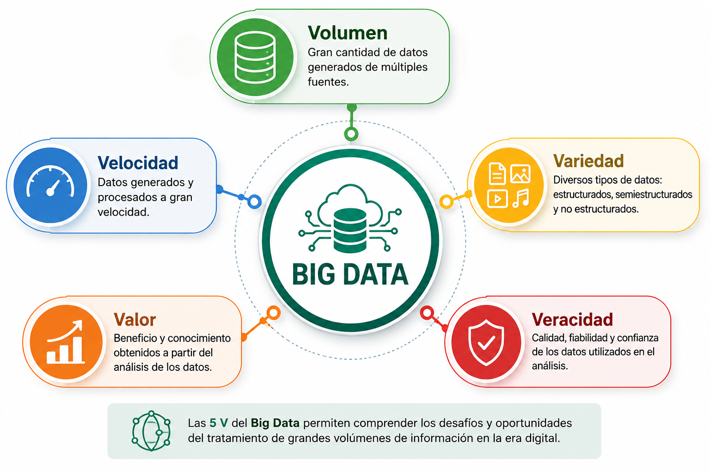

Capítulo 1. Introducción al Big Data
Características del Big Data
Características del Big Data

Figura 1. Las cinco dimensiones del Big Data.
Representa la enorme cantidad de datos generados por organizaciones, usuarios, sensores, dispositivos IoT y aplicaciones. El procesamiento de esta información requiere tecnologías distribuidas como Hadoop o Spark.
Hace referencia a la rapidez con la que los datos son generados, transmitidos y procesados. Muchos escenarios requieren procesamiento en tiempo real para obtener información útil.
Los datos pueden presentarse en formatos estructurados, semiestructurados y no estructurados, incluyendo texto, imágenes, vídeos, audio y registros de actividad.
El objetivo del Big Data consiste en transformar los datos en conocimiento útil que facilite la toma de decisiones y aporte ventaja competitiva a las organizaciones.
La calidad y fiabilidad de los datos resulta esencial para obtener resultados consistentes. Es necesario aplicar procesos de validación, limpieza y control de calidad que eliminen inconsistencias y reduzcan el impacto de datos erróneos o incompletos.
La generación de datos ha experimentado un crecimiento exponencial durante las últimas décadas debido a la digitalización, Internet, los dispositivos móviles y el Internet de las Cosas. Este crecimiento ha impulsado el desarrollo de plataformas distribuidas como Hadoop, Apache Spark y HDFS, capaces de almacenar y procesar grandes volúmenes de información. Asimismo, tecnologías de contenedores como Docker facilitan el despliegue de entornos de Big Data tanto en investigación como en docencia.